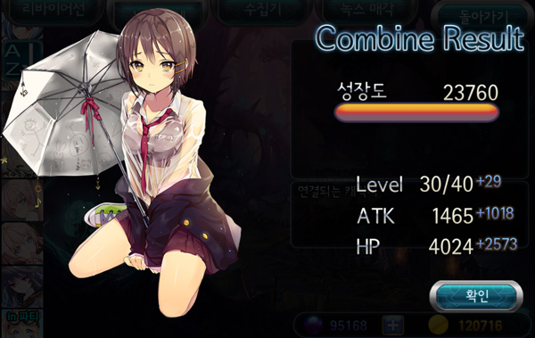
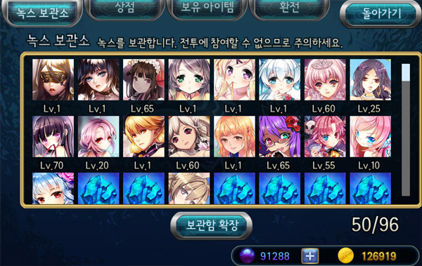

■ Lab.
Information of Nox in possession.
- Enlarge 
View Nox in full screen.
- Character/Card Mode
Toggles the image of the Nox to Character and Card mode.
- Rating
Rate the Nox's illustration, performance, and balance.
For each rating, more compensation will be rewarded, such as Nyang.
- Quest Status 
If there is a Quest attached to the Nox in the Quest List.
- Character Set 
Character set information is displayed here.
- Obtain Event 
For certain Noxes, this shows the Event when the Nox was obtained.
- Players can select up to 20 Nox to use in synthesis. Please be careful when combining Nox.
- When finished selecting, touch OK to combine with the base Nox. Amount of EXP and expected level will show before confirming. Make note of this.
- After confirming, the results of combining are displayed.
- When the Leviathan increases in level, Players will get a Status Point to be used however the Player likes.
■ Nox Synthesis
A place to synthesize Nox.
1. Synthesize Nox - By combining Nox, Players will increase the base Nox's level.
- Select Noxes from the list on the left.
- Press Synthesize Nox[녹스 합체] button on the right.
- After pressing Synthesize, it is the same process show above when feeding the Leviathan.
- There is a difference between Combing with Leviathan and Nox
– Leviathan does not use Nyang but Combining Nox requires Nyang to be used.

- As the Nox level up, their stats(ATK,HP) increases.
2. Nox Combine - Combining Nox with other Noxes to get a completely new Nox.
- Select a Nox from the list on the left.
- Press Combine Nox[녹스 조합] button on the right,
- The base Nox will change and material Nox for combining will be displayed.
- Touch and view details of Nox, when all ingredients are ready, press Combine![조합!],
- The base Nox and material Noxes are removed, Player will get the combined Nox.
- Combined Nox will start at Level 1.
- There are 2 types of Combinations. Spheres(Cash currency) combination will require less materials,
- General Combining require more materials and Nyang.
- In some cases, Combined Noxes is only possible with Spheres.
3. Change Skin - Can change the skin of the Nox with Spheres, Spheres(Cash currency) must be bought.
- Select a Nox from the list on the left.
- Press Change Skin[스킨 변경] button on the right,
- Preview of the Nox will change.
- Press Buy[구매] to complete your purchase,
- Press Apply[적용] to change the skins.
- To disable the skin, press Apply again and press Skin Off[스킨해제].
■ Collector
Once a Nox is obtain, Players can reobtain them through the Collector by using Scarabs.
- On the left displays the Noxes that the Player has obtained. Touch the Nox to reobtain them with Scarabs or Gold Scarabs.
- Noxes that have not been obtained before are displayed in gray and cannot be obtained from the Collector.
■ Nox Storage
When Nox Inventory is full, Noxes are moved to Storage. A place to store Nox that are infrequently used.

- By default, the Warehouse provides 8 slots.
- To expand the storage, press [보관함 확장] at the bottom of the screen. Players can purchase using Spheres(Cash currency), 8 slots are bought at a time.
■ Sell Nox
Get Nyang by selling obtained Nox.
- Select owned Nox to sell and press Select[선택].
- 20 Nox can be sold at a time.
- Will display Nox before selling. Please be careful.
- Once sold, Players can reobtain from the Collecter with Scarabs.